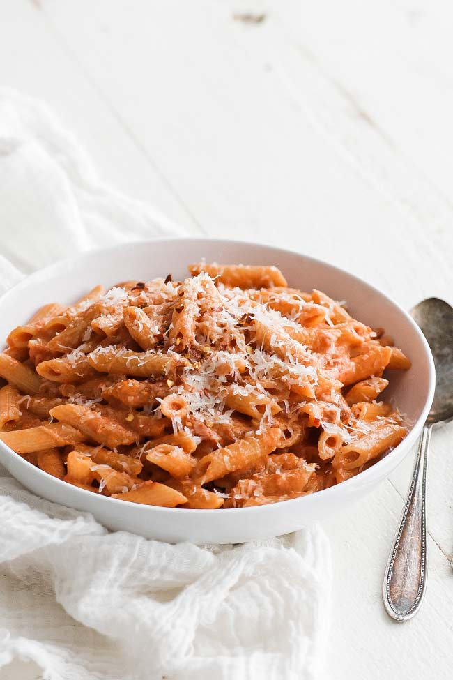

Pasta good enough to make you cream
By Tavis and GiGi
September 27, 2023

Pasta worth creaming for
This pasta is a well kept Italian secret. Despite invasions by Arabs, Pirates, total conquest by the french and the
destruction of world war two, this recipe stayed secret. That is until now. This ceritfied cream worthy pasta will blow
your jeans straight off your body. The secret, as with so much in life, is the sauce. This sauce will stick to the pasta because
we add pasta water (with its starch) back into the tomato sauce. Also butter makes everything nice.
What you need to make the good good
- 1 box of penne
- 12 oz flavorful tomato sauce
- 4oz butter
- 12 oz mushrooms
- 1 cup pasta water, reserved
- Seasoning to taste
Instructions
- Bring recomended amount of salted water to boil, add pasta
- Brown mushrooms in saucepan with 1oz butter,add tomato sauce
- When pasta is cooked reserve 1 cup water, drain the rest of the water, and return pasta to empty pot
- Combine all ingredients in pot, add butter, stir, let sit for 4 minutes.
Home